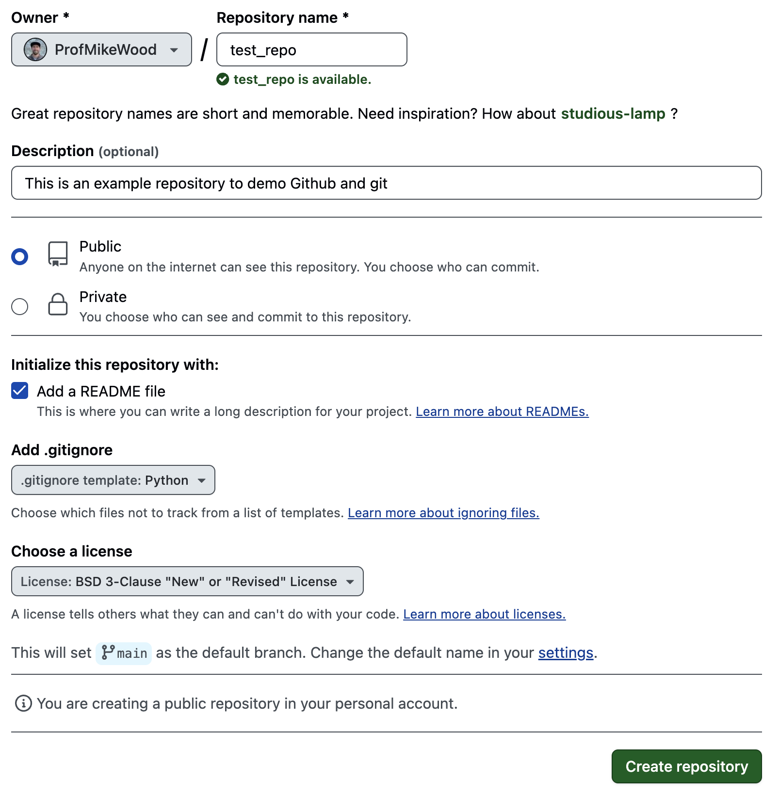
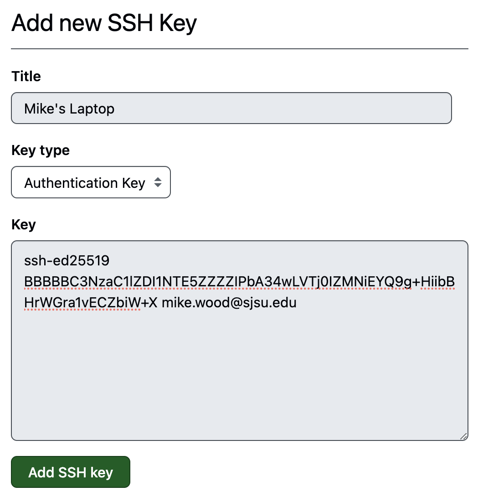

Github and git#
Author: Mike Wood
Learning Objectives: By the end of this notebook, you should be able to:
Set up a Github repository
Pull remote changes to a local repository
Push local changes to a remote repository
Merge changes made locally and remotely
Github is a platform used to store, manage, and share code online. It has a variety of uses across many different coding languages and projects - as you’ve likely noticed, these course notes are stored on Github.
To get started, create a Github account at github.com, if you haven’t already done so.
Setting up a Github repository#
A repository (or “repo” for short) is used to store a certain selection of code and documentation, such as for a project or a course. To set up a Github repository, log in to your Github account click on the green New Repository button on the homepage.
Repository Name#
Begin by selecting a name for your repository. The name should be descriptive of the contents of the repository. Note that the repository name does not need to include your name or username as your account will be associated with your repository.
Public vs Private#
Next, select whether you would like your repository to public or private. Some people like to keep all of their repositories public for a variety of reasons - for example, to maintain open-source code or to attract potential collaborators working on similar topics. Others prefer to keep their repositories private, sharing coding only with approved collaborators. Often, developers will work on a private repository until they are ready to release a version of their code in the wild.
Adding a README#
Up next, choose the option to add a README.md file to the repository. A README.md is a document formatted with markdown (md) to describe the contents of the repository.
Adding a .gitignore#
Next, add a .gitignore file. Since these note are for Python, choose the template for Python. This file will ensure that extraneous files necessary for running code on our machine will not end up on Github.
Note
If you are on MacOS it is highly recommended that you add the .DS_Store file to your .gitignore file. This will avoid adding this unnecessary file to your Github repo.
Choosing a License#
Finally, choose a license. There are lots of different licenses available, each outlining different permissions for other users who may want to use your code. One common option is the BSD-3-Clause. This license allows others users to use your code for whatever they see fit. The key stipulations are that they must attribute your work to you and that you don’t endorse whatever they may do with your code. You’re encouraged to peruse the available licenses and choose the one you find fits your work the best.
Finalize the Repository#
After choosing your configuration options, click Create Repository. Woohoo! We’re ready to start using our repository.
Setting up git locally#
When working with Github, we will often two version of our code – the version stored on our local machines and the version stored on the remote machine (i.e. “on Github”). On our local machine, we can interface with our remote repositories on Github using the git command line tools. Activate your conda environment and make sure you have git installed:
conda install git
Next, set up the configuration fields for your Github account:
git config --global user.name “first last”
git config --global user.email “email”
This only needs to be done once when first working with git.
Setting up SSH Keys#
There are a few ways to set up connections with Github - SSH keys are one straight-forward way to get this done.
Create an SSH key on your machine#
First, we will create an SSH key on our local machine. Once we have this key, we will be able to put information on Github so that it recognizes commands from our local machine.
Begin by opening up a terminal and moving into your home directory
cd ~
Next, see if you have a directory called .ssh by typing
ls .ssh
If you get a message saying ls: .ssh: No such file or directory, then make a directory with the following command:
mkdir .ssh
Once you have this directory, move into it with
cd .ssh
Now, inside this directory, we will make a new ssh key pair
ssh-keygen -t ed25519 -C "your_github_email@example.edu"
This command will generate a new pair and ask you where you how you want to save your file. You can keep it simple and use the default file by pressing Enter.
Then, you will be prompted to enter a passphrase - this is a password for your SSH key. Add one if you’d like.
Once your key is generated, you will get a randomart image as follows:
The key's randomart image is:
+--[ED25519 256]--+
|Q=C&=+. |
|*BO+Y.. |
|.*oA.=o |
|o * A. + . |
| o B . W |
| x o . . |
| o . |
| . |
| |
+----[SHA256]-----+
Next, we will add our ssh key to the ssh-agent. Begin by starting the ssh-agent:
eval "$(ssh-agent -s)"
Then, we will modify the file named config. Check that you have one using ls config. If you don’t, then use touch config to make it. To modify this file, open it with your favorite text editor and add the following to the file:
Host github.com
AddKeysToAgent yes
UseKeychain yes
IdentityFile ~/.ssh/id_ed25519
Finally, add your ssh key with the following:
ssh-add id_ed25519
After being prompted for your passphrase, you should get a note as follows:
Identity added: id_ed25519 (mike.wood@sjsu.edu)
Add your SSH key to Github#
First, begin by copying the contents of your public key file - this is the file with the pub extension you created above (mine is id_ed25519.pub).
You can print the contents of this file to your screen with the cat command:
cat id_ed25519.pub
The output should look something like:
ssh-ed25519 BBBBBC3NzaC1lZDI1NTE5ZZZZIPbA34wLVTj0IZMNiEYQ9g+HiibBHrWGra1vECZbiW+X mike.wood@sjsu.edu
Next, navigate to your Github account and, from the dropdown on the right, click on Settings. From this page, choose SSH and GPG keys and then Add new SSH key. On this page, you can give your SSH key a name (e.g. for your machine) and in the key section, past the contents of your public SSH key:
Click on Add key to save the changes. Now, we should be ready to go!
Cloning Repositories#
Once you’ve set up your Github repository, now we’d like to add our code and start making changes. To begin, open a terminal and navigate to a location where you would like to store your files. Then, “clone” your reponsitory to this location with the following command:
git clone git@github.com:ProfMikeWood/test_repo.git
Note that this path is accessed on the landing page for your repository by clicking on the green <> Code button and choosing the options under SSH:
Great! Now we have a local copy of your repository. But we also have to be careful here. We now have two versions of our repository - one is online and one is on our local machines. How do we make sure they are “sync’d”. First, let’s take a look at how changes made remotely can be updated in your local version.
Pulling Remote Changes#
Let’s say we wanted to make a change to one of our files on the remote version of our repository by using the online editor. For example, what if we wanted to update the README of our repository? Let’s open the editor and add a new note for ourself.
Click on the README.md file and click the pencil icon in the upper-right corner to edit the file. Then, add a new line to the file as follows:
## Github notes
Changes made on remote repositorys should be "pulled" to local repositories to reflect recent changes
After making the changes, click on Commit Changes
Now, back in your terminal, move into your repository
cd test_repo
and “pull” the changes using the following line:
git pull
Now, we should see the following message indicating the README file has been updated:
Fast-forward
README.md | 3 +++
1 file changed, 3 insertions(+)
Further, if you open the README.md file on your local machine, you should see the new lines reflected in the local version of your repository!
Committing and Pushing Local Changes#
Most often, we are working on code on our local machine that we want to incorporate into our repository.
Say, for example, we created a python file called test.py in a code directory and a example.ipynb Jupyter notebook in a directory called notebook. Go ahead and create those on your local machine now inside your repository (i.e. in the same directory as your README file). After completing these steps your repository should have the following structure:
test_repo
|- LICENSE
|- README.md
|- code
|- test.py
|-notebooks
|- example.ipynb
Now, we are ready to sync our remote repository with our local one. In your repository folder, we first need to “stage” our changes. To accomplish this, we use the git add command. We can individual files one at a time, e.g.
git add code/test.py
Alternatively, we can use wildcards to add many files (or all of them), i.e.
git add *
Once we’ve staged all of the files we would like reflected in our remote repository, we are ready to “commit” our changes, similar to how we updated our README file in the remote repository above. On the command line, we can accomplish this along with a short (<50 character) message about what is being updated:
git commit -m "message about recent changes"
When this is successful, we will get a nice message about our updates:
2 files changed, 0 insertions(+), 0 deletions(-)
create mode 100644 code/test.py
create mode 100644 notebooks/example.ipynb
Now, we’re ready to get these files online using a “push” command:
git push
Finally, if you check you repository on Github, you will see your code and your notebook online. Woo!
Ignoring Files in a Push#
When we are working with files on our local machine, our code will often produce data for our projects. However, we don’t want to put our data on Github - after all, Github is a code repository, not a data repository.
Warning
Don’t put data on Github - only code.
While we shouldn’t put data on Github, we may want to work with our data next to our code. In this case, we can make a reference to our data in out .gitignore file so that our data will never inadvertently end up in our repository.
Let’s see an example - make a directory called data and make a couple of example data files:
mkdir data
cd data
touch data_file_1.txt
touch data_file_2.txt
Now, let’s add a line to our .gitignore file to make sure these data files aren’t included in any push. Edit your .gitignore file with your favorite text editor with a line for data/*.
To best showcase the behavior of this command, let’s also add a new code file we may want to push:
cd ../code
touch test2.py
cd ..
Ok, now let’s try our lines for adding files to our remote repo:
git pull
git add *
git commit -m "adding a new code file"
git push
Now let’s check our repo online - we do see our new code file but we don’t see our data files. These were ignored by our .gitignore file!
Reconciling Changes Made Locally and Remotely#
All of the code above - the pushing of local changes to the remote repo and the pulling of remote changes to your local repo - works just fine when you are just changing your files in one place at a time. But what happens if your local repo and your remote repo both have new but different changes? This is very common when working collaboratively with other programmers. In this case, we will need to merge our branches to reflect both changes.
Let’s see how this works by deliberately make changes in two locations. In your local directory, let’s make yet another new coding file
cd code
touch test3.py
cd ..
At the same time, let’s add another new note to our README file on the remote repository as follows:
When changes are made both locally and remotely, the changes must be "merged"
Ok, with our example set up, let’s see what happens locally when we try to add and commit changes:
git add *
git commit -m "adding yet another coding file"
Shoot, we got an error:
! [rejected] main -> main (fetch first)
error: failed to push some refs to 'github.com:ProfMikeWood/test_repo.git'
hint: Updates were rejected because the remote contains work that you do
hint: not have locally. This is usually caused by another repository pushing
hint: to the same ref. You may want to first integrate the remote changes
hint: (e.g., 'git pull ...') before pushing again.
hint: See the 'Note about fast-forwards' in 'git push --help' for details.
We get a note that perhaps we should try to pull first - let’s try that.
git pull
Agh, even more warnings:
hint: You have divergent branches and need to specify how to reconcile them.
hint: You can do so by running one of the following commands sometime before
hint: your next pull:
hint:
hint: git config pull.rebase false # merge
hint: git config pull.rebase true # rebase
hint: git config pull.ff only # fast-forward only
hint:
hint: You can replace "git config" with "git config --global" to set a default
hint: preference for all repositories. You can also pass --rebase, --no-rebase,
hint: or --ff-only on the command line to override the configured default per
hint: invocation.
Ok, at this point, we need to merge our changes:
git merge
This command will take you into vim-like text editor. Here, you can edit this file by pressing the i key. Then, after the commented lines, you can add a note about the merge, i.e.
Now, you can save your changes by hitting the esc key, and then typing :wq and then Enter.
Great, now we’re in business and ready to push:
git push